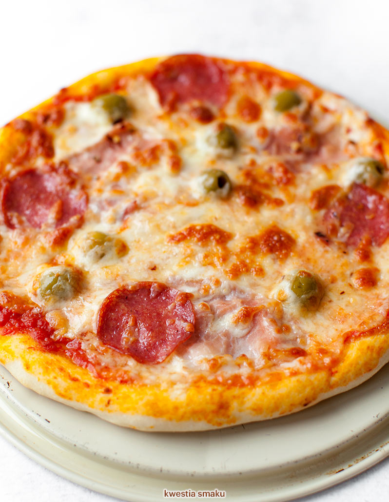

Składniki na 2 pizze
Ciasto:
- 600 g mąki pszennej, najlepiej typ 00 + trochę do posypania blatu
- 320 ml ciepłej wody
- 25 g świeżych drożdży
- 3 łyżki oliwy z oliwek
- 1 łyżeczka soli
- 1 łyżeczka cukru np. białego
Sos:
- 400 g pomidorów krojonych z puszki
- 2 łyżki oliwy z oliwek
- 1 ząbek czosnku
- 1 łyżeczka suszonego oregano
- 1/2 łyżeczki soli
- świeżo mielony pieprz
Dodatki:
- 250 g sera mozzarella z zalewy
- 100 g szynki dojrzewającej np. prosciutto crudo
- 2 garście rukoli
- kilka pomidorków koktajlowych do dekoracji
Przygotowanie
- Drożdże utrzyj z 1/3 szklanki ciepłej wody, łyżką mąki oraz łyżeczką cukru. Następnie rozczyn odstaw na 10-15 minut w ciepłe miejsce, aby zaczął pracować. Mąkę przesiej do dużej miski, dodaj pozostałe składniki: rozczyn, pozostałą wodę oliwę z oliwek oraz sól. Następnie wyrabiaj ciasto – aż stanie się elastyczne i gładkie. Ciasto przykryj ściereczką, pozostaw do wyrośnięcia w ciepłe miejsce na około 30 minut.
- Następnie kamień do pizzy włóż do zimnego piekarnika i rozgrzej go 230°C z funkcją termoobiegu. Kamień nagrzewa się około 30 minut. Jeśli nie macie termoobiegu włączcie pieczenie góra i dół i dajcie maksymalną temperaturę.
- Wyrośnięte ciasto wyrób jeszcze raz, następnie podziel na 2 równe części. Każdą część rozciągnij na kształt koła średnicy 30-35 cm, można to zrobić ręcznie lub za pomocą wałka. Do wykonania pizzy użyliśmy stolnicy również wykonanej z granitu. Dzięki temu, że jest wykonana właśnie z granitu jest zimna, ale doskonale wyrabia się na niej ciasto.
- W niewielkim rondelku rozgrzej oliwę, następnie lekko podsmaż drobno posiekany czosnek. Dodaj pomidory z puszki, dopraw solą, pieprzem i oregano. Gotuj na małym ogniu ok. 10 minut. Na koniec zmiksuj sos blenderem. Spody posmaruj sosem pozostawiając czyste brzegi. Następnie posyp po całej powierzchni porwanym serem mozzarella.
- Pizzę piecz 5-8 minut, aż rant ciasta mocno się zarumieni. Po wyjęciu z pieca połóż plasterki szynki dojrzewającej, połówki pomidorków, posyp liśćmi rukoli.
Powrót na górę strony
Powrót na stronę główną